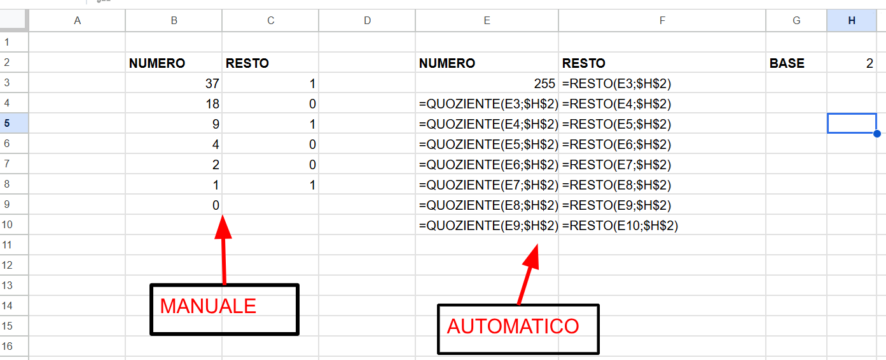

Passi ordinati
Un algoritmo è formato da istruzioni eseguite in un ordine preciso.
3.02 · Modulo 3.1 · 55 minuti
Le divisioni successive diventano una sequenza di istruzioni che il foglio può ripetere per noi.
Cosa abbiamo fatto in laboratorio
Abbiamo trasformato il procedimento delle divisioni successive in un piccolo algoritmo realizzato con Google Fogli.
Nella Lezione 3.01 abbiamo già usato le divisioni successive per passare dal decimale al binario. Qui riprendiamo quegli stessi passi e li facciamo eseguire al foglio.
Al termine
Un algoritmo è formato da istruzioni eseguite in un ordine preciso.
Google Fogli può ripetere automaticamente gli stessi calcoli su righe successive.
La base può diventare un parametro letto da una cella.
Il nostro algoritmo
Parole chiave
Un singolo passo che indica che cosa fare.
La stessa sequenza di passi eseguita più volte.
Un dato che possiamo cambiare senza modificare l’algoritmo.
Il risultato intero della divisione e ciò che rimane.
Esempio con Google Fogli
Prepariamo poche celle. La colonna E conterrà il numero iniziale e i quozienti; la colonna F conterrà i resti.

| Cella | Contenuto | Significato |
|---|---|---|
| H2 | 2 | Base scelta: prova anche 8 o un’altra base da 2 a 10. |
| E3 | 255 | Numero iniziale da convertire. |
| E4 | =QUOZIENTE(E3;$H$2) | Quoziente intero della prima divisione. |
| F3 | =RESTO(E3;$H$2) | Resto della prima divisione. |
QUOZIENTECi dà il risultato intero della divisione. Questo valore continua nella riga successiva.
RESTOCi dà ciò che rimane dopo la divisione. Conserviamo questo valore per costruire il risultato finale.
$H$2Contiene la base. I simboli $ mantengono fermo il riferimento a H2 quando trasciniamo la formula.
Automatizziamo la ripetizione
Quando trasciniamo la formula di E4, il riferimento al quoziente precedente cambia riga; il riferimento alla base resta sempre H2:
E4 = QUOZIENTE(E3; base)
E5 = QUOZIENTE(E4; base)
E6 = QUOZIENTE(E5; base)
...Lo stesso accade per i resti:
F3 = RESTO(E3; base)
F4 = RESTO(E4; base)
F5 = RESTO(E5; base)
...Continuiamo finché nella colonna dei quozienti compare 0. Poi leggiamo i resti dal basso verso l’alto.
Passaggio fondamentale
=QUOZIENTE(E3;2)
=RESTO(E3;2)Queste formule funzionano soltanto per la base 2.
=QUOZIENTE(E3;$H$2)
=RESTO(E3;$H$2)La base non è più scritta nella formula: viene letta dalla cella H2.
Questo rende l’algoritmo più generale: gli stessi passi possono essere usati con basi diverse cambiando una sola cella.
Ripasso essenziale
NUMERO
↓
divisione per BASE
↓
┌───────────────┐
│ │
QUOZIENTE RESTO
│ │
↓ ↓
nuovo numero conserva
│
└── RIPETI finché il quoziente è 0Ora prova tu
Scrivi 100 nella cella E3.
Scrivi 2 nella cella H2 e completa la conversione.
Cambia soltanto H2 da 2 a 8. Quale altra parte del foglio devi modificare?
Devi modificare soltanto la cella H2, che contiene il parametro BASE. Le formule e i passi dell’algoritmo restano uguali.
Senza voto
RESTO?$H$2 invece di 2?